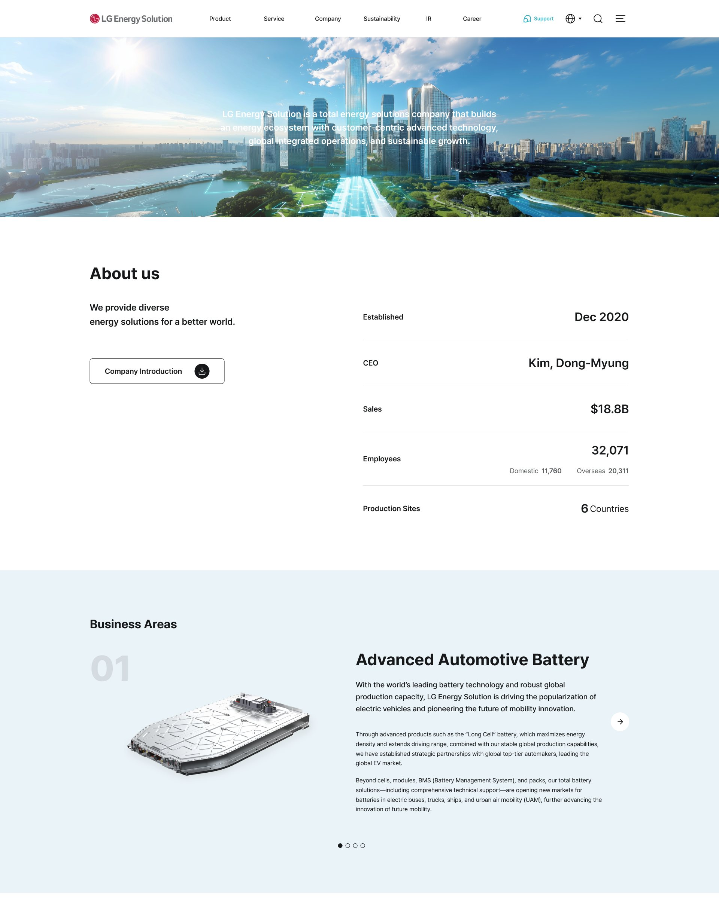
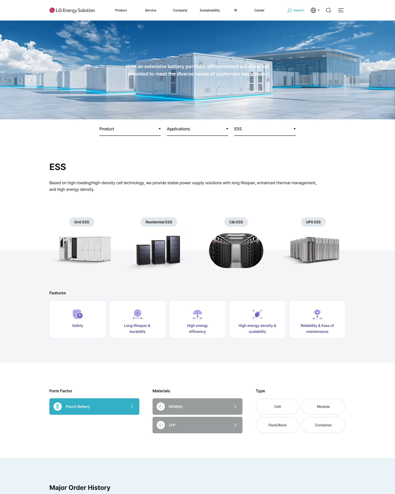
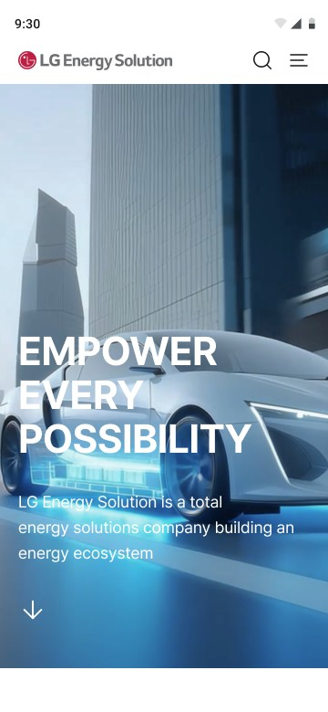
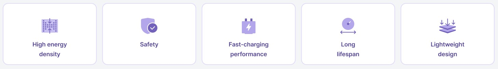
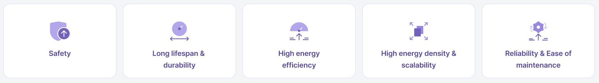

LG 에너지솔루션
(About)
글로벌 배터리 선도 기업 LG에너지솔루션의 기업 웹사이트 리뉴얼. 디자인 PL로서 콘셉트부터 생성형 AI 비주얼, 최종 품질까지 디자인 전반을 이끌었습니다.
2025
(01) (Problem)
서로 다른 고객과 이해관계자에게, 하나의 브랜드로 읽히는 웹사이트가 필요했습니다.
LG에너지솔루션은 글로벌 배터리 선도 기업으로서의 브랜드 가치와 기술 경쟁력을 디지털에서도 같은 무게로 전달해야 했습니다.
다양한 콘텐츠와 서비스가 페이지마다 다른 경험으로 흩어지지 않고, 미래 에너지와 기술 혁신이라는 추상적인 가치가 직관적으로 읽히게 만드는 것이 이 리뉴얼의 핵심 과제였습니다.
-
(01)
Consistency
방대한 콘텐츠와 서비스가 하나의 디지털 브랜드 경험으로 이어져야 했습니다.
-
(02)
Visibility
미래 에너지 생태계와 기술 혁신이라는 보이지 않는 가치를 한눈에 보여 줘야 했습니다.
-
(03)
Global Trust
글로벌 고객에게 신뢰감과 차별화된 브랜드 경험을 줘야 했습니다.
(02) (Role)
- 50%디자인 본인 참여도
- 6명 디자인팀 리딩 (최대)
- 11개월 프로젝트 리딩
- Client
- LG Energy Solution
- Position
- Design PL · UI/UX
- Period
- 2025.04 – 2026.02
- (01) 디자인 콘셉트 · 전략 글로벌 기업 이미지와 사업 방향성을 반영한 UX/UI 콘셉트와 핵심 비주얼 전략 수립
- (02) 메인 · 서브 페이지 디자인 메인 페이지와 주요 서브 페이지 UX/UI 직접 디자인
- (03) 생성형 AI 비주얼 메인 히어로, 제품 · 사업소개 콘텐츠의 이미지 · 영상 기획과 제작
- (04) 팀 운영 · 품질 관리 디자인팀 업무 배분, 일정 · 리소스 관리, 최종 산출물 품질 검수
- (05) 고객사 커뮤니케이션 요구사항 수렴과 디자인 방향 조율
(03) (Process)
-
(01)
Concept
브랜드 아이덴티티를 바탕으로 디자인 콘셉트를 구체화하고, 사이트 전체의 디자인 방향과 핵심 비주얼 전략을 세웠습니다.
Why페이지마다 판단이 달라지지 않도록, 모든 디자인 결정의 출발점을 브랜드에 두었습니다.
-
(02)
Design System
Visual Design · UI · Service 전 영역에 공통으로 쓰이는 디자인 체계를 만들고, 데스크톱에서 모바일까지 같은 기준으로 확장했습니다.
Why다양한 콘텐츠와 서비스가 어떤 화면에서든 하나의 브랜드 경험으로 연결되게 하기 위해서입니다.
-
(03)
Generative AI Visual
메인 히어로와 제품 · 사업소개 콘텐츠의 이미지와 영상을 생성형 AI로 직접 기획하고 제작했습니다.
Why눈에 보이지 않는 에너지 기술과 미래 비전을, 설명이 아닌 장면으로 보여 주기 위해서입니다.
-
(04)
Iconography
Abstract Icon Style을 바탕으로 파스텔 톤을 쓰되, 디지털 환경에서도 선명하도록 명도와 채도를 세밀하게 조정했습니다.
Why기술 기업의 신뢰감과 브랜드 고유의 친근함을 아이콘 하나에도 함께 담기 위해서입니다.
-
(05)
Quality & Alignment
디자인팀 업무를 나누고 일정과 리소스를 관리하며, 고객사와 방향을 조율하고 최종 산출물을 직접 검수했습니다.
Why여러 디자이너가 만든 결과물이 하나의 기준으로 완성되도록 하기 위해서입니다.
(04) (Result)
웹어워드코리아 2025 제품브랜드 혁신대상 수상.
-
(01)
Brand
LG에너지솔루션의 전문성과 미래지향적인 이미지를 강화했습니다.
-
(02)
Experience
글로벌 고객에게 신뢰감과 차별화된 브랜드 경험을 주는 웹사이트를 구축했습니다.
-
(03)
System
콘텐츠와 서비스가 하나의 브랜드 경험으로 연결되는 디자인 체계를 남겼습니다.








